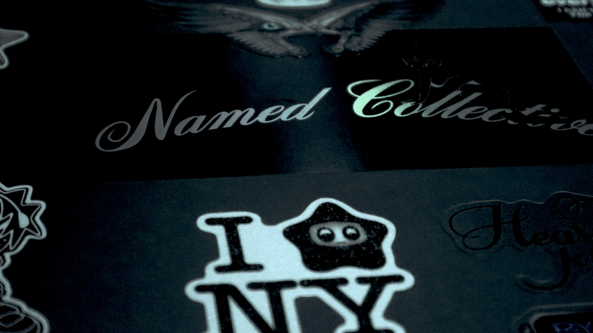
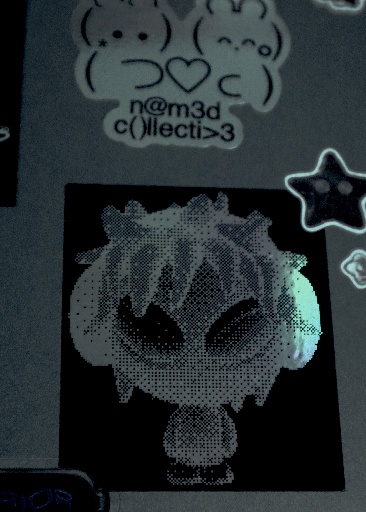

 
Reflection
These pictures of my laptop were taken at the computer lab using the provided DSLR cameras. I opted to take these photos because I redid the stickers on my laptop recently. I felt that the artworks and the composition of these stickers were very creative and showcased who I am as a person. When initially taking these photos, I wanted to have a gloomy mysterious theme that matched my personal aesthetic. At first glance, I found that the computer lab lighting was too warm for my liking. After transferring them to Photoshop, I adjusted the yellow hue towards blue in order for the cool-tone to allow the stickers to pop more. I used the Levels adjustment layer to edit the shadows, midtones, and highlights, turning both photos into a darker environment. Then, I used the Curves adjustment layer to alter the contrast of the photos so that the dark colors stand out completely against the whites. For minor touch-ups, I also adjusted the exposure levels, brightness, and contrast using the adjustment layer settings. As per the assignment requirements, I cropped both images using the Crop function in the Photoshop toolbar. The first image was cropped to have the dimensions 1920 x 1080p, while the second image was cropped to be 5” x 7”. Once I finished editing, I exported the files in JPG format and ensured both photos were under 2MB. I had a fun time with this homework assignment, and it was very interesting to tinker around with the different settings.